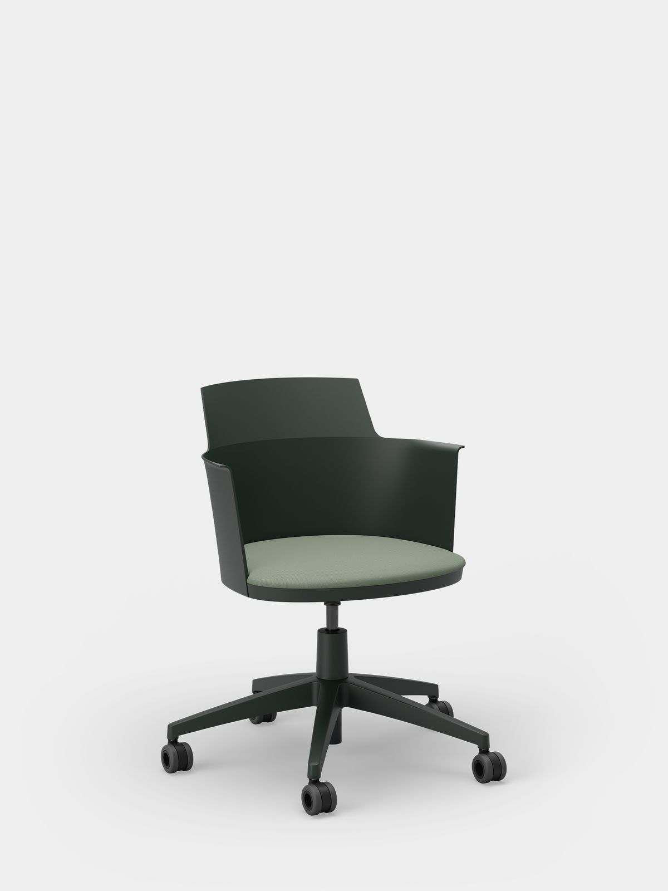
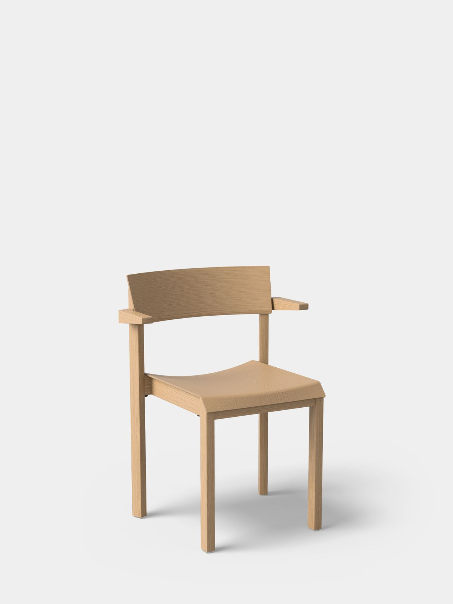
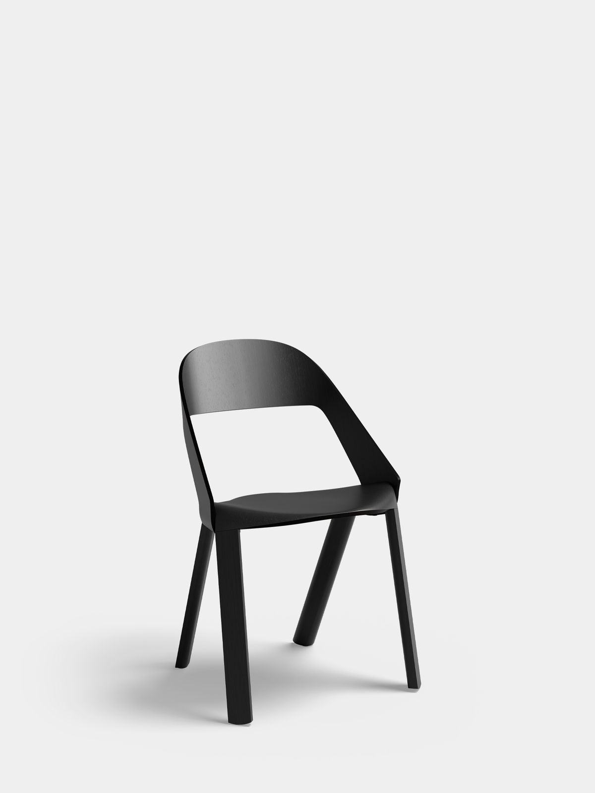
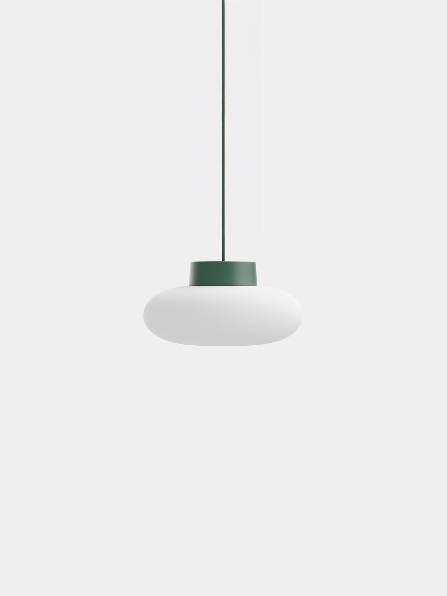

Products
Approach
Inspiration
Request samples
Search the site
Toggle side menu
Hide side menu
Home
Products
Inspiration
News
Approach
Careers
Asset Library
Contact
LinkedIn
Pinterest
Instagram
Grid
List
Products
Featured
All
Chairs
Lighting
Acoustics
Couches
Side Tables
Tables
Stools
Filters

media loading
10
10
10
10
0:00
0:00
10
10
10
10
0:00 / 0:08
Auto
Auto
1x
1x
1.2x
1.5x
1.7x
2x
1x
1x
1.2x
1.5x
1.7x
2x
Kami Swivel Chair
Big Modular Table System

media loading
10
10
10
10
0:00
0:00
10
10
10
10
0:00 / 0:07
Auto
Auto
1x
1x
1.2x
1.5x
1.7x
2x
1x
1x
1.2x
1.5x
1.7x
2x
Kaska Wooden Stack Chair

media loading
10
10
10
10
0:00
0:00
10
10
10
10
0:00 / 0:03
Auto
Auto
1x
1x
1.2x
1.5x
1.7x
2x
1x
1x
1.2x
1.5x
1.7x
2x
Rove Wooden Chair

Split Straight Pendant Lamp
Split Straight Rail Pendant Lamp
Split Round Pendant Lamp
Split Straight Ring Pendant Lamp
Mute Beam Direct + Indirect
Mute Tone PET Felt Acoustic Panel
Mute Peak PET Felt Acoustic Panel
Mute Fraction PET Felt Acoustic Panel
Mute Fit PET Felt Acoustic Panel
Mino Sofa Modular System
Mino Sofa Three Seats
Mino Sofa Two Seats
Mino Sofa One Seat
Pod PET Felt Privacy Chair
Musette Side Tables
MG Side Tables
Nook PET Felt Lounge Chair
Big Round Modular Table System
Lite Round Modular Table System
Lite Modular Table System
LJ 4 PET Felt Counter Stool
LJ 3 PET Felt Bar Stool
LJ 2 PET Felt Stack Chair
LJ 1 PET Felt Armchair
Hale Wooden Lounge Chair
Hale Wooden Bar Stool
Hale Wooden Counter Stool
Hale Wooden Stack Chair
Hale PET Felt Lounge Chair
Hale PET Felt Bar Stool
Hale PET Felt Counter Stool
Hale PET Felt Stack Chair
Fost Large Bulb PET Felt Acoustic Lamp
Fost Bulb PET Felt Acoustic Lamp
Fost Large PET Felt Acoustic Lamp
Fost PET Felt Acoustic Lamp
Twist Wooden Bar Stool
Twist Wooden Counter Stool
Twist Wooden Stack Stool
Twist PET Felt Bar Stool
Twist PET Felt Counter Stool
Twist PET Felt Stack Stool
Pivot PET Felt Adjustable Lamp
Pivot Duo PET Felt Adjustable Lamp
Ratio Pendant Lamps
AK 3+4 PET Felt Room Dividers
AK 3+4 PET Felt Workplace Dividers
AK 2 PET Felt Workplace Divider Lamp
AK 1 PET Felt Workplace Divider
Mute Flow Floating Lamp PET Felt Acoustic Panel
Mute Flow Floating PET Felt Acoustic Panel
Mute Flow Room Divider
Mute Flow PET Felt Acoustic Panel
Mute Flat PET Felt Acoustic Panel
Pico Coffee Table
MG 4 Table
Column Tables
Hale Table
Filters
Series
Twist Series
LJ Series
Hale Series
Mino Series
Fost Series
Pivot Series
Ratio Series
Split Series
Mute Series
AK Series
Big modular tables
Lite modular tables
MG Series
Materials
Wood
PET felt
Post-consumer plastic
Upholstery
Designer
Jens Fager
Johan van Hengel
Ivan Kasner
Ionna Vautrin
Jörg Boner
KASCHKASCH
Benjamin Hubert
Thomas Bentzen
Laurens van Wieringen
KLINGERBORDIHN